Medium Resolution Vegetation Phenology and Productivity (MR-VPP) – Algorithm Theoretical Basis Document (ATBD)
Copernicus Land Monitoring Service
Contact:
European Environment Agency (EEA)
Kongens Nytorv 6
1050 Copenhagen K
Denmark
https://land.copernicus.eu/
Reference Document for Version 5.0 Issue 2.0
Lead service providers for production (SC#5 MR-VPP 2025 Extension): Flemish Institute for Technological Research, Belgium (VITO), Lund University, Sweden.
Produced by: Hongxiao Jin1, Zhanzhang Cai1, Lars Eklundh1, Else Swinnen2, Walter Horsten2, Tim Ng2
1 Lund University, Lund, Sweden
2 VITO
Disclaimer: © European Union, Copernicus Land Monitoring Service 2026, European Environment Agency (EEA) All Rights Reserved. No parts of this document may be photocopied, reproduced, stored in retrieval system, or transmitted, in any form or by any means whether electronic, mechanical, or otherwise without the prior written permission of the European Environment Agency.
1 Introduction
1.1 MR-VPP products summary
Copernicus is the European Union’s Earth Observation Programme, providing information services based on satellite observations and in situ (non-space) data. These services are freely and openly accessible through six thematic components: atmosphere monitoring, marine environment monitoring, land monitoring, climate change, emergency management, and security.
Within this framework, the Copernicus Land Monitoring Service (CLMS) delivers a suite of high-quality bio-geophysical products that describe the status and dynamics of the land surface across pan-European regions. These products support monitoring of vegetation, crop health, the water cycle, the energy budget, and the terrestrial cryosphere. CLMS ensures timely production and delivery, while maintaining consistent, long-term time series for continuous environmental analysis. CLMS is jointly implemented by the European Environment Agency (EEA) and the European Commission’s Joint Research Centre (JRC).
Vegetation phenology describes the timing of recurring plant life cycle events throughout the growing season. With remote sensing, phenology is typically monitored using time series of vegetation indices. These indices capture the amount of green biomass and the intensity of photosynthetic activity, reflecting plant functional types and their seasonal dynamics.
As part of the pan-European component, CLMS produces and disseminates the Medium-Resolution Vegetation Phenology and Productivity (MR-VPP) product suite (Version 5.0). MR-VPP V5.0 is generated at 500 m spatial resolution from MODIS Collection 6.1 NBAR time series (Terra and Aqua) covering 26 February 2000 to 16 April 2026. The dataset includes annual VPP parameters and 5-day plant phenology index (PPI) outputs, along with quality flags. MR-VPP V5.0 is produced over the EEA39 area (32 EU member states, the UK, and six cooperating countries in the Western Balkans).
MR-VPP Version 5.0 Issue 2.0 extends the product coverage to the year 2025. The phenology retrieval for 2025 was generated using MODIS PPI input data spanning 1 January 2024 to 19 April 2026, ensuring complete temporal coverage for the target year while limiting the processing window. In addition, the full MODIS PPI archive from 24 February 2000 to 19 April 2026 was reprocessed to evaluate the consistency between phenology estimates derived from a limited temporal window and those obtained from the complete long-term record.
Unlike previous releases, this version is accompanied by an Algorithm Theoretical Basis Document (ATBD). Earlier MR-VPP versions were only supported by evaluation reports, partly because the High-Resolution VPP (HR-VPP) product was developed immediately after MR-VPP, and an ATBD was prepared for HR-VPP. While HR-VPP and MR-VPP share core algorithms and theoretical foundations, HR-VPP introduced improvements in data handling and adopted a clearer naming scheme. Additional enhancements were implemented in the CLMS CGLOPS1 global Land Surface Phenology (LSP) product, based on PROBA-V and Sentinel-3 OLCI NBAR data. With suitable adaptations, these advances are now applied to MR-VPP to exploit the long MODIS time series (25+ years) and daily observation interval.
Both MR-VPP V5.0 and the previous V4.0 [AD03] rely on MODIS NBAR Collection 6.1 as input. However, V5.0 introduces several important improvements (Table 1), including daily rather than 5-day inputs, an extended time series, enhanced PPI calculation with improved artifact handling, updated QA flags, an upgraded TIMESAT version, harmonized output formats, and a naming scheme consistent with other CLMS LSP products.
Table 1. Key improvements in MR-VPP Version 5.0 compared with Version 4.0.
| Items | Version 5.0 Issue 2.0 | Version 4.0 | Comments |
| Input data interval | daily | 5-day | Higher observation frequency reduces uncertainties |
| Input data span | Jan 2024 – Apr 2026 (short TS) vs. Feb 2000 – Apr 2026 (long TS) |
2000 Feb – 2023 Dec | Longer record improves interannual consistency; 2024 end-season estimates are more reliable with added 2025 data |
| PPI calculation | Improved; excludes artifacts in bright desert/barren regions | Artifacts persisted | New checks avoid estimates of false seasonality in bright sandy areas |
| PPI range | [-1, 5] | [-1, 3] | Expanded range captures broader vegetation density |
| PPI quality flags | Based on QA of both red and NIR NBAR, align with CGLOPS1 LSP (Sentinel-3) | Simple binary flag (good/bad) | More accurate, supports weighted TIMESAT processing |
| TIMESAT | Version 4.2 with Python API and enhanced data check and smoothing. | Customized version 4.1.2 | New release validated globally by third parties in CLMS CGLOPS1 LSP project |
| Output VPP format | Harmonized with other CLMS LSP products | Legacy format | Increases user consistency |
| Naming scheme | Consistent with other CLMS LSP products | Legacy scheme | See Table 7 in Appendix 6.2 for naming correspondence between Version 5.0 and Version 4.0 |
| MR-VPP PPI | Raw PPI + QA flags at 5-day intervals | Fitted PPI; limited data re-use | Raw PPI + QA archived for consistency and to enable re-use |
| Phenology retrieval temporal strategy | Short processing window fully covering target year, including one preceding year and ~3 months after target year | Full multi-decadal time series preferred | High consistency confirmed between short time series and long-term processing; supports efficient near-real-time operational updates |
This ATBD documents the theoretical foundation and algorithmic details of MR-VPP V5.0 production. The product suite provides 13 VPP parameters, derived for up to two growing seasons per year, including the dates of season start, peak, and end, as well as seasonal integrals, derivatives, amplitudes, and maximum values. These are estimated from smooth seasonal trajectories of the Plant Phenology Index (PPI), which combines MODIS NBAR reflectance in red and near-infrared bands. PPI is sensitive to seasonal variations in photosynthetically active leaf area index (LAI). Because these dynamics are driven by solar radiation, temperature, and precipitation, the MR-VPP parameters provide essential indicators of climate impacts on vegetation.
1.2 Scope and objectives
The purpose of this document is to describe the physical and mathematical basis of the algorithm used to generate Version 5.0 of the CLMS MR-VPP product for the years 2000-2025 (26 years).
MR-VPP 500 m Version 5.0 is based on MODIS NBAR data (Collection 6.1) [AD05] and builds on the revised CGLOPS LSP processing chain (Version 2.0) [AD04]. A key improvement is the correction of artifacts in sparsely vegetated areas with bright soil background. In earlier versions, seasonal variations in the Plant Phenology Index (PPI) were incorrectly affected by fluctuations in the Difference Vegetation Index (DVI) of bright soil pixels—signals unrelated to vegetation phenology. These artifacts were particularly evident in Version 4.0 over northern Africa (outside the pan-European domain) but had previously been overlooked.
A further objective of Issue 2.0 is to assess the feasibility of generating reliable phenology products using temporally limited input datasets that fully cover the target year, together with one preceding year and the first months following the target year. This post-target-year extension is intended to provide sufficient temporal context for stabilizing end-of-season detection and reducing edge effects, while avoiding the need to reprocess the complete multi-decadal archive for each annual update. As MR-VPP is expected to transition toward Sentinel-3 OLCI-based continuation, with cross-calibration against the MODIS archivef, this evaluation is relevant for developing efficient annual LSP update strategies. In particular, it supports the assessment of near-real-time (NRT) production approaches for annual LSP metrics, where NRT refers to the annual LSP product for the most recent completed year because LSP metrics are produced at an annual time step. Computational efficiency and storage requirements are therefore critical operational considerations.
This ATBD provides a reference for the theoretical background, algorithmic details, and practical considerations underlying the generation and use of the MR-VPP Version 5.0 product.
1.3 Document structure
This document is structured as follows:
- Chapter 1 provides an introduction to the document.
- Chapter 2 describes input data and vegetation index for MR-VPP.
- Chapter 3 describes the retrieval methodology.
- Chapter 4 describes Post processing and file naming.
- Chapter 5 lists the references cited in this document.
- Chapter 6 contains an appendix with additional information.
1.5 Terminology
1.5.1 Terms
Phenology is broadly defined as “…the study of recurring plant and animal life cycle stages, especially their timing and relationships with weather and climate.” (Schwartz, 2013), c.f. (Abbe, 1905; Lieth, 1974). In MR-VPP we define phenology more specifically as the timing of development of photosynthetically active leaf foliage. Plant phenology is driven by environment cues on internal physiological processes at molecular level that produce externally observable responses (Chmura et al., 2019; Singh et al., 2017). Some of these responses, such as budset or in-wintering, are difficult to observe, whereas the development of leaf area is visible both to human observers on the ground, and from satellite data. The development of leaf foliage can be described using green leaf area index (LAI), which is a biophysical parameter defined as the one-sided leaf surface area over the corresponding ground area. Phenological parameters (phenometrics) describe specific stages on the seasonal growth curve (seasonal trajectory), e.g., the date of the start of the season, the length of the season, or the date of the end of the season.
Leaf area controls the development of plant biomass and the uptake of energy for conversion of light into carbon through photosynthesis, thus productivity. Productivity is a term denoting the growth of vegetation, often described as gross primary productivity (GPP), which is the growth due to photosynthesis, or net primary productivity (NPP GPP minus the respiration). The absorption of solar energy by the plant canopy is often measured by FAPAR, fraction of absorbed photosynthetically active radiation. There is an asymptotic relationship between FAPAR and LAI leading to a saturation of FAPAR at high LAI. Therefore, FAPAR is a less useful descriptor than LAI of leaf foliage development at high vegetation density. For formulating phenology parameters across a large area, like the European continent, an index that relates closely to LAI is therefore advantageous.
1.5.2 Abbreviations and acronyms
| AD | Applicable document |
| AMPL | Seasonal amplitude |
| ATBD | Algorithm Theoretical Basis Document |
| BRDF | Bi-directional Reflectance Distribution Function |
| CGLOPS | Copernicus Global Land Operations |
| CLMS | Copernicus Land Monitoring Service |
| COG | Cloud Optimized GeoTIFF |
| DL | Double-logistic fitting |
| DOY | Day of year |
| DVI | Difference Vegetation Index |
| EEA | European Environment Agency |
| EOS | End of season |
| EOSD | End of season date |
| EOSV | Vegetation index value at EOSD |
| EPSG | European Petroleum Survey Group geodetic parameter dataset |
| ESA | European Space Agency |
| EU | European Union |
| EVI | Enhanced Vegetation Index |
| EVI2 | Two-band Enhanced Vegetation Index |
| FAPAR | Fraction of Absorbed Photosynthetically Active Radiation |
| GDAL | Geospatial Data Abstraction Library |
| GIMMS | Global Inventory Modeling and Mapping Studies |
| GPP | Gross Primary Production |
| HLS | Harmonized Landsat Sentinel-2 |
| HPC | High-Performance Computing |
| HR-VPP | CLMS High Resolution Vegetation Phenology and Productivity dataset |
| IGBP | International Geosphere-Biosphere Program |
| JRC | Joint Research Center |
| LAI | Leaf Area Index |
| LAEA | Lambert azimuthal equal-area projection |
| LENGTH | Length of season |
| LSLOPE | Slope of the green-up period |
| LSP | Land Surface Phenology |
| LUNARC | Lund University Centre for Scientific and Technical Computing |
| MAE | Mean Absolute Error |
| MAXD | Day of the maximum of season |
| MAXV | Maximum value of the season at MAXD |
| MCD43A2 | MODIS BRDF-Albedo Quality product |
| MCD43A4 | MODIS Nadir BRDF-Adjusted Reflectance product |
| MDVI | Maximum DVI over a time period |
| MINV | Minimum value of season. |
| MODIS | Moderate Resolution Imaging Spectroradiometer |
| MR-VPP | CLMS Medium Resolution Vegetation Phenology and Productivity dataset |
| NAISS | National Academic Infrastructure for Supercomputing in Sweden |
| NASA | National Aeronautics and Space Administration of the USA |
| NBAR | Nadir BRDF-Adjusted Reflectance |
| NDVI | Normalized Difference Vegetation Index |
| NIR | Near-Infrared |
| NPP | Net Primary Productivity |
| NRT | Near-real-time |
| OLCI | Ocean and Land Color Instrument |
| PPI | Plant Phenology Index |
| PROBA-V | Project for On-Board Autonomy - Vegetation |
| QA | Quality Assessment |
| RMSE | Root Mean Square Error |
| RSLOPE | Slope of the green-down period |
| SC | Specific Contract |
| SOS | Start of season |
| SOSD | Start of season date |
| SOSV | Vegetation index value at SOSD |
| SP | Spline fitting |
| SPROD | Seasonal productivity |
| TIMESAT | a program for analyzing time-series of satellite sensor data |
| TOC | Top-of-Canopy |
| TPROD | Total productivity |
| TS | Time series |
| ULUND | Lund University |
| USA | United States of America |
| VI | Vegetation Index |
| VIIRS | Visible Infrared Imaging Radiometer Suite |
| VITO | Flemish Institute for Technological Research |
| VPP | Vegetation Phenology and Productivity |
2 Input data and plant phenology index for MR-VPP
2.1 Input data
The MR-VPP product is developed from daily 500 m resolution MODIS Nadir Bidirectional Reflectance Distribution Function Adjusted Reflectance (NBAR; MCD43A4 v6.1) together with the MODIS BRDF-Albedo Quality (MCD43A2 v6.1), both obtained from NASA’s Level-1 and Atmosphere Archive & Distribution System (LAADS) Distributed Active Archive Center (DAAC)[^1]. For the period 24 February 2000 to 19 April 2026, this amounts to about 9,200 images per tile for the full archive, and 1 January 2024 to 19 April 2026 for the short time series. [^1]: https://ladsweb.modaps.eosdis.nasa.gov/archive/allData/61/
The NBAR data are corrected using Ross-Thick-Li-Sparse Reciprocal BRDF model to adjust TOC values as if they were collected from a nadir view at local solar noon time. Although generated daily, each NBAR value is based on a 16-day retrieval window, with the date corresponding to the center of the period (Strahler et al., 1999). This product combines observations from both the Terra and Aqua satellites, choosing the observation at clear sky conditions from each retrieval cycle.

In total, 23 MODIS tiles are required to cover the entire EEA-39 extent and Ukraine of tile h20v03 (Figure 1). Each tile consists of 2400×2400 pixels, and in total ~12 TB of data were downloaded to LUNARC’s COSMOS cluster hosted by Lund University, Sweden. LUNARC operates in partnership with NAISS, the Sweden’s largest research infrastructure for high-performance computing (HPC), providing AI, storage, cloud services, and expert support for advanced scientific research in Sweden.
2.2 Calculation of PPI
For estimation of phenology, we chose a spectral vegetation index that is responsive to photosynthetically active leaf area index: the plant phenology index (PPI, Jin & Eklundh, 2014).
The formula of PPI (unit: m²·m⁻², Jin & Eklundh, 2014) is:
\[PPI = -K \times \ln\left(\frac{MDVI - DVI}{MDVI - DVI_s}\right)\] Eq. 1
where DVI is the difference vegetation index. DVI is a dimensionless index and is obtained by subtracting the red TOC reflectance from the near-infrared (NIR) TOC reflectance,
\[DVI = R_{NIR} - R_{RED}\] Eq. 2
MDVI is the temporal potential maximum DVI, which represents infinite leaf layers for a pixel with leaf traits that suit the environmental conditions of the location. MDVI is estimated from long-term MODIS NBAR data of over 25 years. The MDVI estimation from the maximum value of a long time series of DVI works well in densely vegetated areas due to the asymptotic nature of vegetation spectral reflectance (Tucker, 1977). However, in sparsely vegetated areas, the asymptotic MDVI level cannot be reached, resulting in a small MDVI value. In this case, the logarithm expression in Eq. 1 results in unrealistically large PPI values like dense vegetation. To address this issue, a lower boundary empirical value of 0.18 is assigned as the MDVI value for pixels below this threshold, providing an enhanced spatial consistency in VPP. \(DVI_s\) is introduced in Eq.1 to minimize influences of soil background on vegetation signals, and meanwhile to capture sparse vegetation areas such as drylands. The steps for estimating MDVI and \(DVI_s\) are MDVI = max(DVI), from the 25 years data. MDVI = 0.18 , for MDVI < 0.18 . \(DVI_s\) = min(0.09, \(MDVI_{scene}\)/4) , and \(MDVI_{scene}\) = max(MDVI) over a scene. The K factor in PPI is a gain factor given by
\[K = \frac{1}{4Q_E} \frac{1+MDVI}{1-MDVI}\] Eq. 3
where \(Q_E\) is the canopy leaf light extinction efficiency, the ratio of leaf cross-section area on the light beam to leaf geometric cross-section area, unit: m²·m⁻² (Hapke, 1993). \(Q_E\) is related to leaf inclination angle, solar angle, and the diffuse fraction of solar radiation:
\[Q_E = d_c + (1-d_c) \cdot \frac{G}{\cos(\theta_i)}\] Eq. 4
where G is a geometric function of leaf angular distribution, set to 0.5, and \(d_c\) is an instantaneous diffuse fraction of solar radiation at 12:00 local solar noon of the day, which is used in MODIS NBAR data normalization. The diffuse fraction at solar zenith angle \(\theta_i\) for clear sky of standard atmosphere conditions is used:
\[d_c = 0.0336 + \frac{0.0477}{\cos(\theta_i)}\] Eq. 5
The range of PPI is restricted between -1 and 5 to reduce the noise sensitivity in high PPI values. Values below -1 are set to -1, and values above 5 are set to 5. We keep the negative PPI values over non-vegetated areas (water, snow, bare ground, etc.) for later potential use in exploring land surface properties other than vegetation. However, in the bare ground areas of bright sandy deserts, seasonal variations in PPI time series occur and are not related to vegetation phenology, which generates artifacts in MR-VPP Version 4.0 and the CGLOPS LSP Version 1.0. Therefore, we use the criteria of \(R_{RED} > 0.35\), and \(DVI > 0.05\) to identify these bright pixels and assign a value of 0 to PPI. See Figure 9 in Appendix 6.1 for an example of the sum of the Total Production (TPROD) in Season 1 of 2018 generated using Version 5.0, compared with that using Version 4.0.
The calculation of PPI involves three main steps (Figure 2).
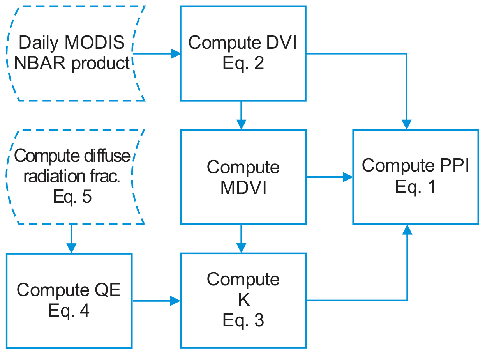
2.3 Calculation of PPI Quality flag (QA) values for TIMESAT processing
The PPI data quality is estimated from the NBAR red and NIR bands quality dataset MCD43A2, as a weighted quality of QA of red and NIR bands, with higher weight (0.9) assigned to NIR, and lower weight (0.1) to red. This is because the NIR band provides the majority of information of the vegetation canopy and the red band provides more limited information, due to the fact that NIR light easily can penetrate through a dense canopy and be reflected back to satellite sensors, while red light hardly penetrates through a dense canopy and is mainly reflected back with information from the canopy surface. PPI data quality flag values and weights for TIMESAT processing are listed in Table 2.
Table 2. PPI data quality flag QA values and weights for TIMESAT.
| QA | PPI quality | Weight for TIMESAT |
|---|---|---|
| 0-1 | Good | 1 |
| 2 | Fair | 0.6 |
| 3-253 | Poor | 0.1 |
| ≥ 254 | No-use | 0 |
The output PPI dataset information is shown in Table 3. Note that PPI data are not planned for further storage or public access.
Table 3. PPI data format and data quality flag QA.
| Name | Data type | Scale, offset | Data range | Fill value | Description | Unit |
| PPI | INT16 | 0.001,0 | -1000~5000 | 32767 | PPI data | m²·m⁻² |
| QA | UINT8 | - | 0~255 | 255: no observation | Quality flag | - |
| 254: invalid PPI due to MDVI<0.09 or infinite PPI |
||||||
| 253: bright soil pixels, with PPI forced to 0 when RRED > 0.35, and DVI > 0.05 |
||||||
| 252: PPI<-1, truncated to -1 | ||||||
| 251: PPI>5, truncated to 5 | ||||||
| 250: DVI>MDVI, complex PPI value |
2.4 Specification of output PPI data
Table 3 shows specifications of the input PPI data used for phenology parameter estimation. While daily input data were applied for VPP estimation, the archive PPI time series were extracted at a nominal 5-day interval (the 1st, 6th, 11th, 16th, 21st, and 26th of each month) to reduce storage requirements, resulting in 72 dates per year. This 5-day interval is aligned with other CLMS dekadal products (1st, 11th, and 21st of each month), and can also be aggregated to a half-month interval (1st, and 16th of each month), facilitating comparison with other satellite data, e.g. GIMMS NDVI/LAI.
3 The VPP retrieval Algorithm
3.1 Outline
Calculation of MR-VPP products is based on the following steps: (1) Data preparation: downloading of MODIS NBAR data from NASA’s data archive center. (2) Generation of the plant phenology index (PPI) from NBAR at 500 m resolution and daily interval. (3) Processing with TIMESAT version 4.2 to derive smooth seasonal trajectories and phenology and productivity parameters (Figure 3).
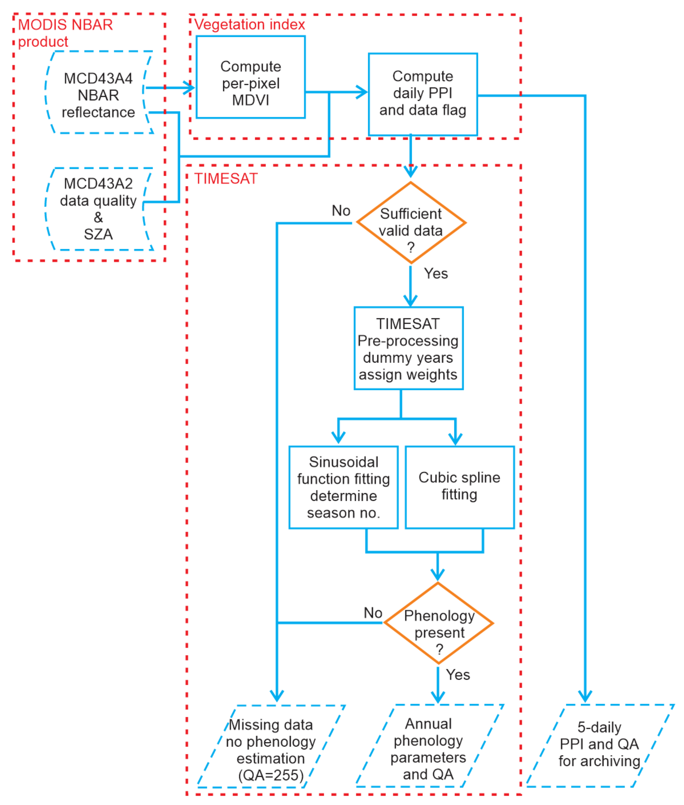
For valid land pixels, PPI is computed at daily time step from NBAR. The maximum difference vegetation index (MDVI) values from the entire NBAR time series from 2000 to 2025 are used in the computation. We then process the PPI series in TIMESAT 4.2 to smooth the signal, derive the phenology/productivity metrics, and generate the corresponding QA flags (see Section 3.4).
3.2 Basic underlying assumptions
In this product, phenology is inferred from smoothed seasonal trajectories of vegetation indices that track canopy greening and browning. PPI is designed to follow changes in green (photosynthesizing) leaf area while limiting background effects from soil and snow. Accordingly, the seasonal PPI curves are treated as approximations of the canopy growth cycle — onset, peak, and senescence. There is no universally accepted rule for defining the curve or its key points; however, using a consistent procedure enables robust trend analyses and comparisons across years and regions, and supports interpretation of vegetation responses to phenological drivers (e.g., weather, climate, management, or disturbances).
3.4 Detailed algorithm description
3.4.1 Extraction of phenology and productivity parameters using TIMESAT
An overview of TIMESAT version 4.2 processing is shown in Figure 4.
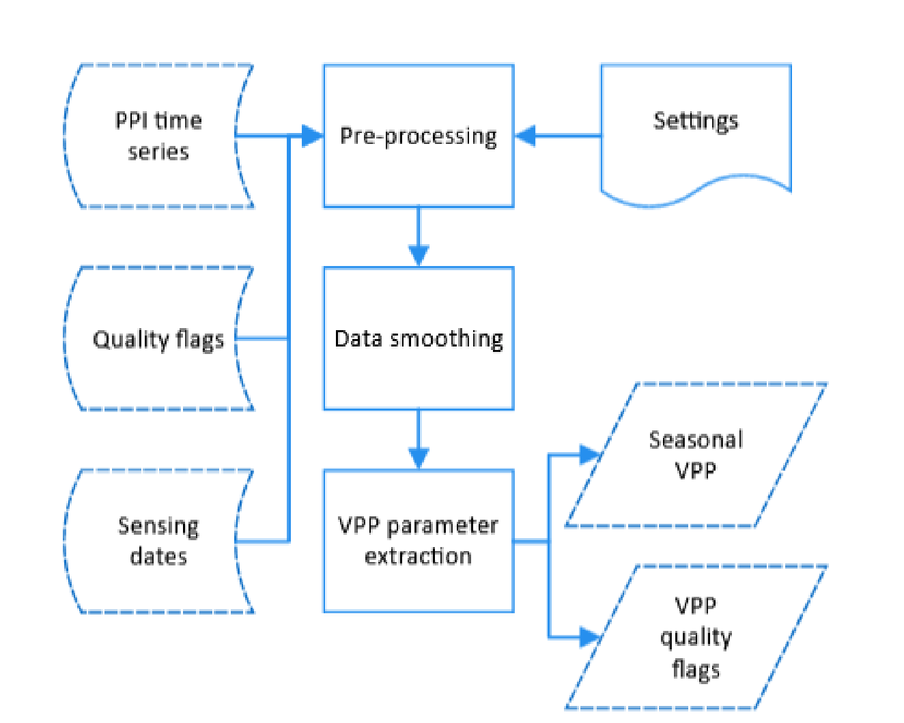
3.4.2 Pre-processing
TIMESAT receives PPI time-series data that may include some noise and temporal gaps. The pre-processing is the first processing step for the input data, containing several parts: determining the base level, setting data weights, adding control points to data gaps, and determining the coarse growing seasons. The pre-processing has four purposes: (1) to transfer the input data (PPI and QA data) to pixel-oriented time series for the later processing; (2) to fill large data gaps exceeding 91 continuous days with a predefined base level; (3) to preliminarily determine whether a time series needs to be excluded from processing; and (4) to make a preliminary analysis of seasonality (number of potential seasons) and to establish the rough timing of each coarse season.
The 91-day gap detection and filling mainly address the high-latitude winter seasons that are masked out in the BRDF data. We determine the base level as the 5th percentile of the acceptable quality PPI observations (weight > 0) over the full period. The weights of PPI values in a time series are set based on QA data. Further, weights of PPI observations that are lower than the base level are set to 0. The base level is used for filling long term data gaps and assisting the cubic spline fitting. TIMESAT will detect whether there are enough good-quality data on the time series, see Section 3.4.7 for details. This step is to ensure the operation of fitting the cubic spline functions.
3.4.3 PPI fitting to daily data
We fit a cubic smoothing spline \(S_p(t)\) (Craven & Wahba, 1978) to the PPI time series by minimizing the value of the following criterion function \(C_p\)
\[C_p = \sum_{i=1}^{n} \lbrace w_i [y_i - S_p(t_i)]^2 \rbrace + p \int_{-\infty}^{+\infty} [S^{''}_p(t)]^2 dt\] Eq. 7
where \(t_i, i = 1, ..., n\) is time vector and \(y_i\) are corresponding PPI values. Each point in the time series is associated with an input weight \(w_i\). The smoothing parameter p controls the shape of the spline, varying from an exactly interpolating spline (p = 0) to a straight line (p → ∞). The p value is set to 1,000, which can reduce the impact of noise while preserving sufficient local variation.
3.4.4 Extraction of phenology and productivity parameters
An initial pixel-wise estimate of the growing seasons’ start and stop dates (“coarse seasons”) is determined by applying a sinusoidal function fitting
\[f(t) = c_1 + c_2 \sin(\omega t) + c_3 \cos(\omega t) + c_4 \sin(2\omega t) + c_5 \cos(2\omega t)\] Eq. 8
where ω = 2π/n, and n is the number of points, f(t) is the corresponding PPI value at time t. The coarse seasons are further used for defining potential seasons.
The derivation of VPP metrics from the daily PPI time series follows the approaches used in CGLOPS1 LSP product [AD04], and is similar to those applied in the MCD12Q2 and HLS phenology products (Bolton et al., 2020; Gray et al., 2019). TIMESAT takes the smoothed daily PPI, extracts the metrics, applies quality checks, and assigns seasons to calendar years (Figure 5). In total, thirteen metrics together with per-season quality information are produced for delivery (Table 4).
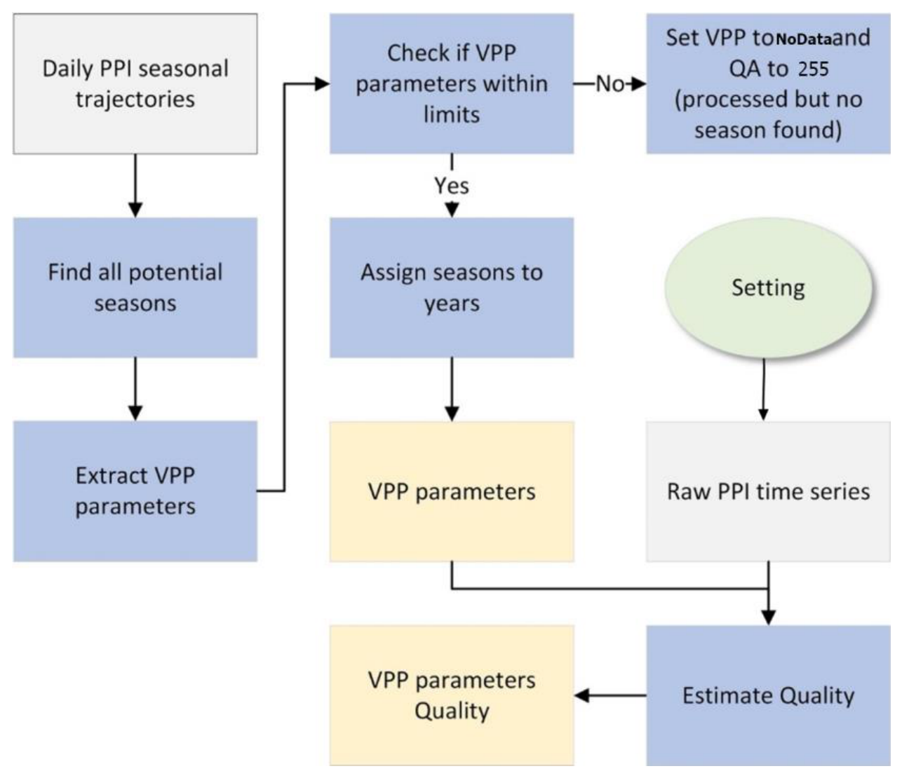
3.4.5 Defining growing season thresholds
TIMESAT locates SOSD and EOSD using relative-amplitude thresholds on the fitted seasonal curve. After SOS and EOS are set, the remaining VPP metrics are computed. For consistency with previous versions of MR-VPP and other related CLMS products, we use 25% for SOSD and 15% for EOSD.
3.4.6 Assigning seasons to years
Because some seasons cross calendar boundaries, we assign seasons to the year of their peak (e.g., a–A–b to 2018; c–C–d–D–e to 2019 in Figure 6). MR-VPP stores up to two seasons per year: the two with the largest peaks are kept and presented chronologically, so Season 1 can be the minor or the main season depending on timing.
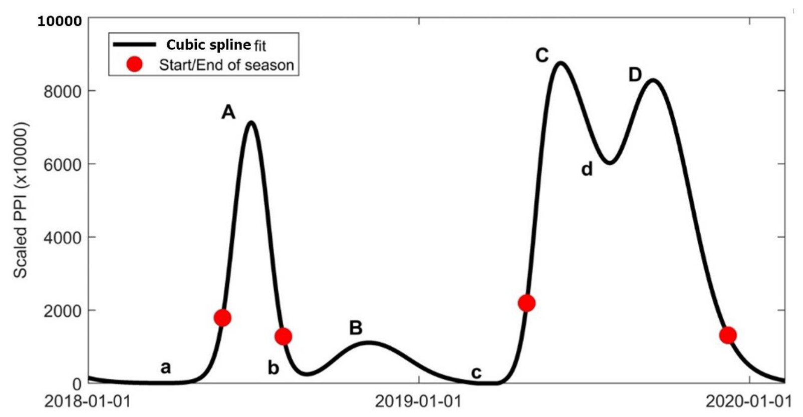
3.4.7 Defining thresholds for omitting seasons and regions
In three scenarios, the VPP are set to nodata-values (with QA=255) and the TIMESAT processing is skipped (BOX 1):
If the total number of valid observations is too low, less than 3 points per year on average throughout the entire time series. This primarily applies to areas lacking valid observations.
If the first-order PPI differences are minimal, less than 3 points per year on average with first-order differences greater than 1×10⁻⁶. This indicates weak seasonality, making it difficult to precisely determine phenological parameters, and mainly occurs with sustained evergreen vegetation.
BOX 1 Pseudo script for omitting seasons and regions
! Default. process = True Point_Threshold = 3*number_of_years Scenario 1 ! total_npt: total number of points ! y: PPI time series of daily interval if count[points with weight > 0] < Point_Threshold, process = False Scenario 2 if count[diff(y) > 1.d-6] < Point_Threshold, process = False Scenario 3 if count[y > (0.02*peak_value)] < Point_Threshold, process = FalseIf the number of points with PPI values above 2% of the peak value is less than 3 points per year on average. This primarily filters out inland water bodies with low PPI values occasionally exhibiting few extreme values possibly caused by noise.
3.4.8 VPP QA
VPP Quality Assurance (QA) is assigned based on both the average of PPI-BRDF-weights (defined from the PPI QA in Table 2 and the total number of valid observations in each of the phenological phases: green-up, green peak, and green-down of the growing season. They are defined as the left 20% – left 80%, left 80% – right 80%, and right 80% – right 20% of the season amplitude respectively (Figure 7). The overall QA is determined based on the leverage of the quality of the three phases.
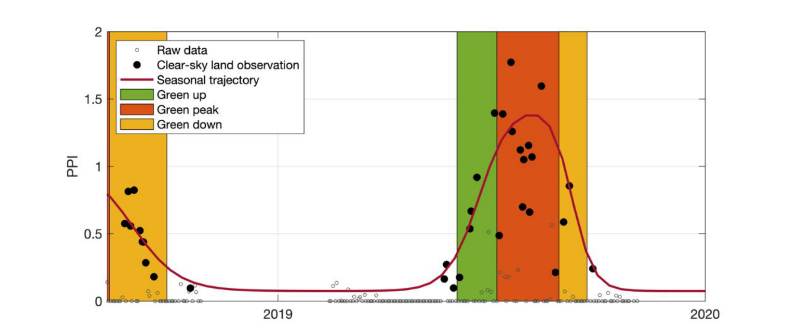
Eight-bit (1 byte) QA values are generated as specified in Figure 8, and the details of bit values and descriptions are listed in Table 5. The QA flag is written to one output file for each season.
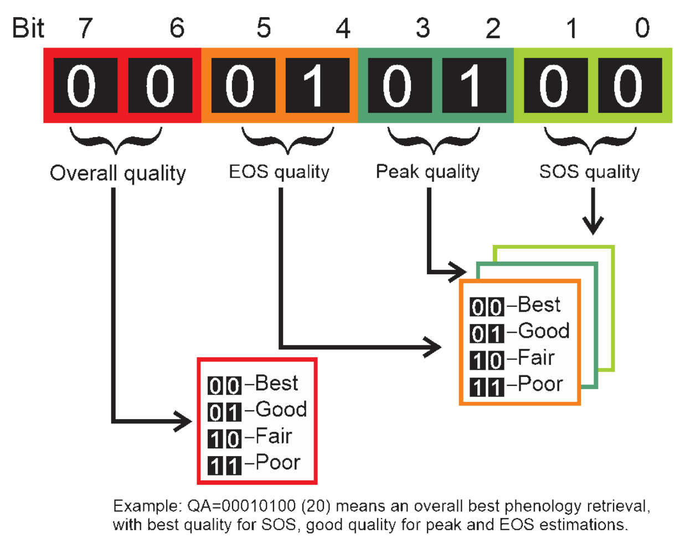
Table 5. MR-VPP QA flags and descriptions of phenology quality.
| SOS/Peak/EOS quality (two-bit values) | ||
| QA byte | Quality | Description |
| 0 | Best | More than 2 valid observations and average best PPI quality |
| 1 | Good | More than 2 valid observations and average good PPI quality |
| 2 | Fair | More than 2 valid observations and average fair PPI quality |
| 3 | Poor | Average poor PPI data quality, or fewer than 3 observations, or more than 24 observations* |
| Overall quality (two-bit values) | ||
| 0 | Best | No poor quality in three phenology phases |
| 1 | Good | Maximum one phase with poor quality |
| 2 | Fair | Maximum two phases with poor quality |
| 3 | Poor | All three phases with poor quality** |
| Summary of QA (byte values) | ||
| QA <127 | Good | Overall good quality, no more than one poor results in three phases |
| QA >127 | Poor | Overall poor quality, more than one poor results in three phases |
| QA=255 | Failure | No input, or no phenology estimation, or all poor estimates |
Notes:
* Includes three situations: 1) fewer than 3 valid observations, 2) phenology phase shorter than 10 days, and 3) phenology phase longer than 4 months.
** Overlaps QA=255 for situations of no inputs, or no phenology estimation. In any case, the VPP retrieval is considered a failure.
3.5 Limitations of the algorithm
While PPI is a physically based index responding to green leaf area index (LAI) variations, it is based on some simplified assumptions. The vegetation canopy is treated like a turbid medium. In forest, violation of this assumption may be significant. Another assumption is that all vegetation is modelled with spherical (uniform) leaf angular distribution (G function in Eq. 4 is 0.5), but this may be violated in cases of erectophile (e.g. cereals) or planophile (e.g. potatoes) crops. Also, the lower bound of the MDVI value is empirically set at 0.18 based on exploratory analysis of MDVI histograms. The soil reflectance is assumed not to change with time.
PPI is scaled between DVI of soil and a maximum DVI. These values represent pure soil and an infinitely thick canopy layer for a specific site. Random variations and noise in these values do not affect the value of PPI much during the start and the end of the season, but may affect the PPI values greatly during the peak growing season. The logarithmic expression in PPI makes high values sensitive to noise. Therefore, the index has been limited to 5.0 in the global context, and it is further being smoothed using TIMESAT.
In crop rotation systems, the assumption of fixed level of maximum DVI is violated, which could lead to underestimation of the seasonal trajectory for the sparser crop. It has been noted that PPI is less sensitive to sparse vegetation than e.g. NDVI. This may lead to underestimation of winter crops or cover crops before the onset of the main growth period in springtime.
In sparsely vegetated areas, reaching an MDVI value representing a sufficiently thick leaf layer is unattainable, making it impossible to estimate a correct MDVI value from the long period of DVI time series. Therefore, we opt to assign an empirical MDVI value of 0.18 to pixels with MDVI values below this threshold.
Although longer time series are generally preferred in phenology estimation because they improve smoothing stability and reduce temporal edge effects, the present evaluation demonstrates that a substantially shorter processing window can provide highly consistent annual phenology estimates when the temporal coverage adequately brackets the target year. Nevertheless, regions with highly irregular seasonality, persistent cloud contamination, or incomplete annual observations may remain more sensitive to temporal window length. Therefore, for future 2026 VPP near-real-time implementations, it is recommended that the 2025 VPP product be regenerated using input time series spanning January 2024 to April 2027, termed non-time-critical product, thereby ensuring at least one complete calendar year of observations both before and after 2025.
Data gaps in winter are filled by the base level value, which may hide some winter crops of low PPI from being detected. Although the smoothing spline can adapt to situations of irregular seasons, there is still no guarantee that all local variation will be detected.
The gap detection method could influence the coarse season detection due to data availability. An extreme case is when there are only few good observations with high-quality PPI values in a window larger than 91 days, leading to seasons being determined by these few data points. To address such cases, we assigned a poor quality (QA=“11”) for the corresponding phenology metrics determined by fewer than 3 valid data points. Caution should be taken when using phenology metrics with poor QA.
The retrieval of a second growing season is generally associated with greater uncertainty than the first growing season. Double-season phenological cycles occur only in relatively limited regions of Europe, primarily in intensive agricultural areas or regions with favorable climatic conditions for multiple crop cycles. Consequently, the number of valid observations supporting the second season is often lower, and the corresponding phenology metrics typically exhibit lower QA compared with the primary growing season.
In addition, the assignment of a growing season to a specific calendar year is based on the timing of the seasonal maximum (MAXD). A season is attributed to the year in which the peak of the fitted seasonal trajectory occurs. For growing seasons with maxima occurring close to the beginning or end of a calendar year, this assignment may become ambiguous, particularly in regions with winter crops or prolonged seasonal activity spanning two calendar years. As a result, caution is required when interpreting annual productivity metrics strictly within calendar-year boundaries, especially for analyses involving second growing seasons or cross-year seasonal dynamics.
Finally, since the outputs only allow a maximum of two seasons per year, some minor seasons may be missed if there are more than two cycles per year, which means that the outputs may not present all cycles, e.g., in the case of multiple moving events in grasslands.
3.6 Risk of failure and mitigation measures
The estimation of VPP critically depends on the availability and quality of the input data, as any loss of accuracy in these data may propagate into the output products. MODIS, onboard Terra (launched in December 1999) and Aqua (launched in May 2002), was originally designed for a nine-year mission but has continued to operate for over 20 years due to their excellent performance. Over the extended lifetime, orbit drift has been a significant issue. For example, Terra’s equatorial crossing time shifted from its nominal 10:30 a.m. to about 9:00 a.m., while Aqua drifted from 1:30 p.m. to progressively late in the afternoon, thereby altering illumination geometry at the time of sensing. However, MR-VPP uses the MODIS MCD43A4 NBAR product, in which reflectance is BRDF-normalized to nadir view at local solar noon using multi-date, multi-angular Terra and Aqua observations. This normalization substantially reduces the direct influence of orbit-drift-related changes in viewing geometry. Remaining risks are mainly indirect, including changes in observation availability, angular sampling, atmospheric conditions, cloud and snow screening, and BRDF inversion quality during the later MODIS record. These effects should be monitored using the MCD43 quality layers and product consistency checks. To enhance reliability, VIIRS NBAR data (available since 2012) can serve as an alternative to the MODIS equivalent. Looking ahead, the transition from MODIS/VIIRS to Sentinel-3 OLCI for MR-VPP is underway, with particular attention to harmonizing the spectral band properties of the sensors.
4 Post processing and file naming
4.1 Post processing
The 23 tiles data were mosaicked into a single image per variable to cover the entire pan-European region. Nearest-neighbour sampling was used to reproject the original sinusoidal projection to the Lambert azimuthal equal-area projection (LAEA, EPSG: 3035). The outputs were saved in Cloud Optimized GeoTIFF (COG) format. A bash script using GDAL to mosaic and reproject the VPP parameters is shown in BOX2. Similar post-processing was applied to PPI time series.
BOX 2 Mosaic 23 tiles and reproject into LAEA projection.
#!/usr/bin/env bash
set -euo pipefail
ROOT="~/proj/HRVPP2/MRVPP_2024/LSP" # input tiles root
OUTDIR="./MRVPP_13VPP_QA" # output folder
SEASONS=("season1" "season2")
YEARS=($(seq 2000 2024))
PARAMS=("SOSD" "SOSV" "LSLOPE" "EOSD" "EOSV" "RSLOPE" "LENGTH" "MINV" "MAXD"
"MAXV" "AMPL" "TPROD" "SPROD" "QA")
# Optional NoData (uncomment & set if known; otherwise VRT inherits per-tile NoData)
# Target projection
T_SRS="EPSG:3035"
# target sampling method
RESAMP="near"
# target resolution or TR = (500 500) for 500 m resolution output
TR=(392 392)
for season in "${SEASONS[@]}"; do
for year in "${YEARS[@]}"; do
for param in "${PARAMS[@]}"; do
listfile="$(mktemp "/tmp/list_${param}_${year}_${season}_XXXX.txt")"
vrt="${OUTDIR}/${param}_${year}_${season}.vrt"
tif="${OUTDIR}/${param}_${year}_${season}.tif"
tif3035="${OUTDIR}/${param}_${year}_${season}_cog.tif"
# find tiles
find "$ROOT" -type f -name "*_${year}_${season}_${param}.tif" | sort > "$listfile"
n=$(wc -l < "$listfile" || echo 0)
echo "[${param} ${year} ${season}] Found $n tiles"
if [[ "$n" -eq 0 ]]; then
echo "[${param} ${year} ${season}] No tiles -> skip"
rm -f "$listfile"
continue
fi
# build VRT (inherit or set NoData)
if [ -n "${NODATA:-}" ]; then
gdalbuildvrt -srcnodata "$NODATA" -vrtnodata "$NODATA" \
-input_file_list "$listfile" "$vrt"
else
gdalbuildvrt -input_file_list "$listfile" "$vrt"
fi
# translate to compressed, tiled BigTIFF (same SRS as inputs)
gdal_translate "$vrt" "$tif" -of COG -co TILED=YES -co COMPRESS=LZW -co BIGTIFF=YES
# prepare nodata flags for warp (if defined)
warp_nodata_args=()
if [ -n "${NODATA:-}" ]; then
warp_nodata_args=(-srcnodata "$NODATA" -dstnodata "$NODATA")
fi
# reproject to EPSG:3035 (LAEA); -multi + all CPUs for speed
gdalwarp -t_srs "$T_SRS" -r "$RESAMP" -tr "${TR[@]}" -multi -wo NUM_THREADS=ALL_CPUS \
"${warp_nodata_args[@]}" \
-co TILED=YES -co COMPRESS=LZW -co BIGTIFF=YES \
"$tif" "$tif3035"
rm -f "$tif"
rm -f "$listfile" "$vrt"
echo "[${param} ${year} ${season}] -> $tif3035"
done
done
done
echo "All done. EPSG:3035 outputs in: $OUTDIR"4.2 File naming
The naming of delivered files is given in Table 6.
Table 6. Filename specifications for PPI and MR-VPP V5.0.
| Data | Filename | Description |
| MR-VPP 13 VPP metrics |
SOSD_YYYY_<s1 or s2>_cog.tif |
Day of start-of-season |
EOSD_YYYY_<s1 or s2>_cog.tif |
Day of end-of-season | |
MAXD_YYYY_<s1 or s2>_cog.tif |
Day of maximum-of-season | |
SOSV_YYYY_<s1 or s2>_cog.tif |
Vegetation index value at SOSD | |
EOSV_YYYY_<s1 or s2>_cog.tif |
Vegetation index value at EOSD | |
MINV_YYYY_<s1 or s2>_cog.tif |
Average vegetation index value of minima on left and right sides of each season |
|
MAXV_YYYY_<s1 or s2>_cog.tif |
Vegetation index value at MAXD | |
AMPL_YYYY_<s1 or s2>_cog.tif |
Season amplitude (MAXV - MINV) | |
LENGTH_YYYY_<s1 or s2>_cog.tif |
Length of Season (number of days between start and end) |
|
LSLOPE_YYYY_<s1 or s2>_cog.tif |
Slope of the green-up period | |
RSLOPE_YYYY_<s1 or s2>_cog.tif |
Slope of the green-down period (absolute value of decreasing rate) |
|
TPROD_YYYY_<s1 or s2>_cog.tif |
Total productivity. Growing season integral computed as the sum of all daily values between SOSD and EOSD. |
|
SPROD_YYYY_<s1 or s2>_cog.tif |
Seasonal productivity. Growing season integral computed as sum of all daily values minus their base level value. |
|
| Aux | QA_YYYY_<s1 or s2>_cog.tif |
VPP Quality flag |
| MR-VPP PPI Time series |
PPI.YYYY.MM.DD_laea_cog.tif |
PPI calculation |
QA.YYYY.MM.DD_laea_cog.tif |
PPI data quality |
Note: YYYY for year, e.g. 2000, 2001, …, 2024, 2025.
5 References
- Abbe, C. (1905). A first report on the relations between climates and crops. Government Printing Office.
- Atzberger, C., & Eilers, P. H. C. (2011). A time series for monitoring vegetation activity and phenology at 10-daily time steps covering large parts of South America. International Journal of Digital Earth, 4(5), 365-386. https://doi.org/10.1080/17538947.2010.505664
- Bolton, D. K., Gray, J. M., Melaas, E. K., Moon, M., Eklundh, L., & Friedl, M. A. (2020). Continental-scale land surface phenology from harmonized Landsat 8 and Sentinel-2 imagery. Remote Sensing of Environment, 240, 111685. https://doi.org/10.1016/j.rse.2020.111685
- Cai, Z., Jönsson, P., Jin, H., & Eklundh, L. (2017). Performance of Smoothing Methods for Reconstructing NDVI Time-Series and Estimating Vegetation Phenology from MODIS Data. Remote Sensing, 9(12), 1271. https://doi.org/10.3390/rs9121271
- Chen, J., Jönsson, P., Tamura, M., Gu, Z. H., Matsushita, B., & Eklundh, L. (2004). A simple method for reconstructing a high-quality NDVI time-series data set based on the Savitzky-Golay filter. Remote Sensing of Environment, 91(3-4), 332-344. https://doi.org/10.1016/j.rse.2004.03.014
- Chmura, H. E., Kharouba, H. M., Ashander, J., Ehlman, S. M., Rivest, E. B., & Yang, L. H. (2019). The mechanisms of phenology: the patterns and processes of phenological shifts. Ecological Monographs, 89(1), e01337. https://doi.org/10.1002/ecm.1337
- Craven, P., & Wahba, G. (1978). Smoothing noisy data with spline functions. Numerische Mathematik, 31(4), 377-403. https://doi.org/10.1007/BF01404567
- Eilers, P. H. C. (2003). A Perfect Smoother. Analytical Chemistry, 75(14), 3631-3636. https://doi.org/10.1021/ac034173t
- Fisher, J. I., Mustard, J. F., & Vadeboncoeur, M. A. (2006). Green leaf phenology at Landsat resolution: Scaling from the field to the satellite. Remote Sensing of Environment, 100(2), 265-279. https://doi.org/10.1016/j.rse.2005.10.022
- Gray, J., Sulla-Menashe, D., & Friedl, M. A. (2019). User guide to collection 6 modis land cover dynamics (MCD12Q2) product.
- Hapke, B. (1993). Theory of reflectance and emittance spectroscopy. Cambridge University Press.
- Jin, H., & Eklundh, L. (2014). A physically based vegetation index for improved monitoring of plant phenology. Remote Sensing of Environment, 152(0), 512-525. https://doi.org/10.1016/j.rse.2014.07.010
- Jin, H., Vicente-Serrano, S. M., Tian, F., Cai, Z., Conradt, T., Boincean, B., Murphy, C., Farizo, B. A., Grainger, S., López-Moreno, J. I., & Eklundh, L. (2023). Higher vegetation sensitivity to meteorological drought in autumn than spring across European biomes. Communications Earth & Environment, 4(1), 299. https://doi.org/10.1038/s43247-023-00960-w
- Jönsson, P., Cai, Z., Melaas, E., Friedl, M., & Eklundh, L. (2018). A Method for Robust Estimation of Vegetation Seasonality from Landsat and Sentinel-2 Time Series Data. Remote Sensing, 10(4), 635. http://www.mdpi.com/2072-4292/10/4/635
- Jönsson, P., & Eklundh, L. (2002). Seasonality extraction by function fitting to time-series of satellite sensor data. IEEE Transactions on Geoscience and Remote Sensing, 40(8), 1824-1832. https://doi.org/10.1109/Tgrs.2002.802519
- Jönsson, P., & Eklundh, L. (2004). TIMESAT – a program for analyzing time-series of satellite sensor data. Computers & Geosciences, 30(8), 833-845.
- Lieth, H. (1974). Phenology and Seasonality Modeling (Ecological Studies-Analysis and Synthesis Series, Vol 8). Springer-Verlag
- Menenti, M., Azzali, S., Verhoef, W., & van Swol, R. (1993). Mapping agroecological zones and time lag in vegetation growth by means of Fourier analysis of time series of NDVI images. Advances in Space Research, 13, 233-237.
- Olsson, L., & Eklundh, L. (1994). Fourier-Series for Analysis of Temporal Sequences of Satellite Sensor Imagery. International Journal of Remote Sensing, 15(18), 3735-3741.
- Roerink, G. J., Menenti, M., & Verhoef, W. (2000). Reconstructing cloudfree NDVI composites using Fourier analysis of time series. International Journal of Remote Sensing, 21(9), 1911-1917. http://www.informaworld.com/10.1080/014311600209814
- Schwartz, M. D. (2013). Phenology: An Integrative Environmental Science (2nd ed.). Springer Science+Business Media B.V.
- Singh, R. K., Svystun, T., AlDahmash, B., Jönsson, A. M., & Bhalerao, R. P. (2017). Photoperiod- and temperature-mediated control of phenology in trees – a molecular perspective. New Phytologist, 213(2), 511-524. https://doi.org/10.1111/nph.14346
- Strahler, A. H., Lucht, W., Schaaf, C. B., Tsang, T., Gao, F., Li, X., Muller, J.-P., Lewis, P., & Barnsley, M. J. (1999). MODIS BRDF/Albedo Product: Algorithm Theoretical Basis Document, Version5.0. Retrieved from https://lpdaac.usgs.gov/products/modis_products_table/mcd43a4
- Tian, F., Cai, Z., Jin, H., Hufkens, K., Scheifinger, H., Tagesson, T., Smets, B., Van Hoolst, R., Bonte, K., Ivits, E., Tong, X., Ardö, J., & Eklundh, L. (2021). Calibrating vegetation phenology from Sentinel-2 using eddy covariance, PhenoCam, and PEP725 networks across Europe. Remote Sensing of Environment, 260, 112456. https://doi.org/10.1016/j.rse.2021.112456
- Tucker, C. J. (1977). Asymptotic nature of grass canopy spectral reflectance. Applied Optics, 16(5), 1151-1156. https://doi.org/10.1364/AO.16.001151
- White, M. A., De Beurs, K. M., Didan, K., Inouye, D. W., Richardson, A. D., Jensen, O. P., O’Keefe, J., Zhang, G., Nemani, R. R., Van Leeuwen, W. J. D., Brown, J. F., De Wit, A., Schaepman, M., Lin, X., Dettinger, M., Bailey, A. S., Kimball, J., Schwartz, M. D., Baldocchi, D. D., . . . Lauenroth, W. K. (2009). Intercomparison, interpretation, and assessment of spring phenology in North America estimated from remote sensing for 1982-2006. Global Change Biology, 15(10), 2335-2359. https://doi.org/10.1111/j.1365-2486.2009.01910.x
- Zhang, X., Friedl, M. A., Schaaf, C. B., Strahler, A. H., Hodges, J. C. F., Gao, F., Reed, B. C., & Huete, A. (2003). Monitoring vegetation phenology using MODIS. Remote Sensing of Environment, 84(3), 471-475. http://www.sciencedirect.com/science/article/B6V6V-478RS7T-1/2/19c385401eecea8964bca155ac01eb71
6 Appendix
6.1 Comparison of TPROD using Version 5.0 and 4.0
Figure 9 shows maps of the total productivity (TPROD) of season 1 in 2018. The spatial patterns of TPROD closely correlate between the two versions. The highest TPROD values are found in the European southern Alpine forests, followed by progressively lower values in temperate forests and croplands of continental Europe, then in the boreal forests of Northern Europe, and lowest in the northern alpine and sub-Arctic regions. Artificially high TPROD values in barren desert areas of northern Africa, present in V4.0, are effectively removed in V5.0.
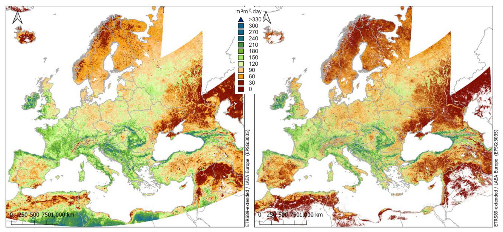
6.2 Comparison of MR-VPP naming scheme in Version 5.0 and 4.0
MR-VPP 5.0 adopts the VPP naming scheme aligned with other CLMS LSP products, including HR-VPP and CGLOPS1 LSP based on Sentinel-3 and PROBA-V data. This scheme is simpler and clearer. Table 7 provides a naming correspondence table, comparing the file-naming conventions of MR-VPP Version 5.0 and Version 4.0.
Table 7. Naming correspondence between MR-VPP Version 5.0 (13 parameters) and Version 4.0.
| No. | Name | Old Name (in filename) |
| Ver 5.0 | Ver 4.0 | |
| 1 | SOSD | dsos |
| 2 | EOSD | deos |
| 3 | MAXD | pos |
| 4 | SOSV | sos_value |
| 5 | EOSV | eos_value |
| 6 | MINV | base_level |
| 7 | MAXV | largest_value |
| 8 | AMPL | seasonal_amplitude |
| 9 | LENGTH | los |
| 10 | LSLOPE | increase_rate |
| 11 | RSLOPE | decrease_rate |
| 12 | TPROD | LINT |
| 13 | SPROD | SINT |
| Aux | QA | - |
6.3 Detailed Comparison of 2025 MR-VPP V5.0 Issue 2.0 Results from Short and Long Input Time Series
The comparison was based on paired-pixel analysis between spatially aligned VPP raster products generated from the short time series and full-archive input time series. The short time series processing used MODIS PPI data from 1 January 2024 to 19 April 2026, while the full-archive processing used the complete MODIS PPI record from 24 February 2000 to 19 April 2026. Valid pairs were identified after excluding no-data values. For QA analysis, only vegetated land-cover classes were considered, using MODIS IGBP classes 1–14 and excluding water, snow and ice, barren or sparsely vegetated areas, and unknown classes. Statistics were calculated for each VPP metric and season, including R², bias, RMSE, MAE, the proportion of pixels close to the 1:1 line, and the number of valid paired pixels.
Spatial comparison maps (Figure 10) demonstrate strong agreement between the long and short time series processing approaches across Europe for representative timing, magnitude, and productivity metrics. The large-scale spatial distributions of SOSD, EOSD, AMPL, and TPROD are visually highly consistent between the two implementations, with only minor localized differences observed in some heterogeneous landscapes and weak-signal regions. The density scatter plots for season 1 (Figure 11) further confirm this high consistency, with the vast majority of pixels tightly concentrated along the 1:1 relationship for all representative metrics. Robust regression slopes were close to unity and the regression lines were nearly indistinguishable from the 1:1 line, particularly for AMPL and TPROD. Comparisons for season 2 (Figure 12) exhibited slightly larger dispersion, especially for EOSD and other timing-related metrics, reflecting the intrinsically weaker, spatially fragmented, and more irregular nature of secondary seasonal cycles in Europe. Nevertheless, the dominant spatial and ecological patterns remained highly consistent between the two processing approaches.
Comparison of the 13 VPP metrics derived from long time series inputs and short time series inputs for the 2025 growing seasons demonstrates overall strong consistency between the two processing approaches (Table 8). For the primary growing season (season 1), all metrics showed very high agreement, with coefficients of determination (R²) ranging from 0.97 to 1.00, very small systematic biases, and low RMSE and MAE values relative to the dynamic range of each metric. Temporal metrics such as SOSD, MAXD, and EOSD differed by only a few days on average (RMSE: 3.35–7.90 days), while vegetation magnitude and productivity metrics exhibited near-identical results (R² ≈ 1.00). More than 98% of valid pixels for all season 1 metrics were located within the predefined consistency threshold around the 1:1 line, indicating that the short time series processing reproduces the long time series results with very high fidelity over the main European growing season.
The secondary growing season (season 2) exhibited slightly lower agreement and substantially fewer valid observations (approximately 6.6 × 10⁴ valid paired pixels compared to 4.4 × 10⁷ in season 1), reflecting the more limited spatial extent and weaker seasonal signal associated with secondary vegetation cycles in Europe. Nevertheless, most season 2 metrics still maintained high consistency (R² generally 0.97–1.00 for vegetation magnitude, slope, and productivity metrics), although timing-related metrics such as EOSD and LENGTH showed somewhat larger deviations (R² = 0.82–0.92; RMSE ≈ 32 days). These larger discrepancies are likely associated with increased uncertainty in detecting weak, irregular, or temporally fragmented secondary seasonal cycles. Overall, the analysis indicates that the short time series processing approach produces highly comparable VPP results to the long time series approach for the majority of metrics and environmental conditions, while some reduction in robustness may occur for weak secondary-season phenological signals.
A small systematic negative bias was observed for several timing-related metrics (SOSD, EOSD, and MAXD), indicating that the near-real-time short time series processing tended to retrieve slightly earlier seasonal dates than the long time series processing. This behavior is likely associated with reduced temporal context and stronger edge effects in the shorter input records used for NRT production. However, the magnitude of the bias was very small (<0.2 days on average) and operationally negligible at continental scale. Since the 2025 VPP products are generated using a temporally limited update window similar to annual NRT LSP production, the products are expected to be updated during subsequent annual reprocessing cycles when additional observations from complete calendar years before and after the target year become available. The inclusion of extended temporal context is expected to further stabilize seasonal curve fitting and reduce edge-related uncertainties.
Quality assessment (QA) comparison between the long and short time series processing approaches indicates highly similar overall QA characteristics for the 2025 VPP products (Table 9). For season 1, approximately 96.5% of valid vegetated pixels were classified as good quality (QA < 127) in both processing approaches, while poor-quality and failed retrievals represented only a small fraction of pixels. The proportion of pixels showing QA improvement in the long time series processing relative to the short time series processing was very small (approximately 0.29%), indicating that the short-input processing reproduced the QA characteristics of the long-input processing with high consistency. Season 2 exhibited somewhat lower overall QA performance, reflecting the intrinsically weaker and spatially limited nature of secondary seasonal signals in Europe; nevertheless, good-quality retrievals still dominated (~91–93% of valid pixels).
Although the long time series processing occasionally generated slightly more valid VPP outputs than the short time series processing, this should not necessarily be interpreted as superior retrieval performance. In situations where observations are sparse within the target temporal window, the absence of phenology retrievals in the short time series processing may correctly reflect insufficient observational support for robust phenology estimation. Under such conditions, increasing retrieval completeness through extended temporal context may risk generating phenological metrics with reduced reliability or interpretability. Therefore, VPP output completeness alone should not be considered the primary criterion for evaluating processing performance; the consistency, robustness, and physical interpretability of the retrieved seasonal signals are more important considerations.
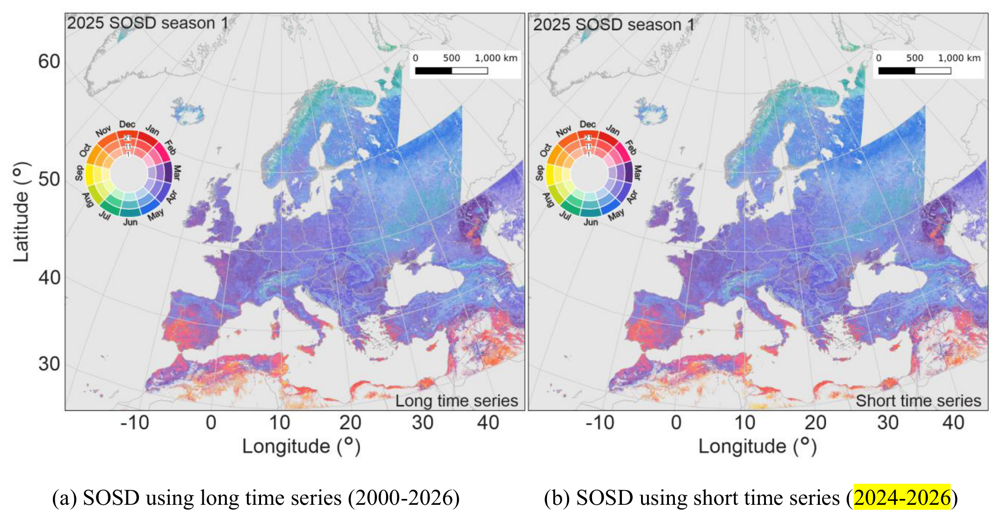

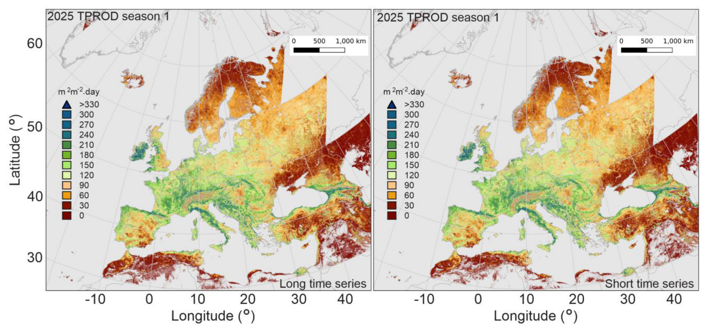
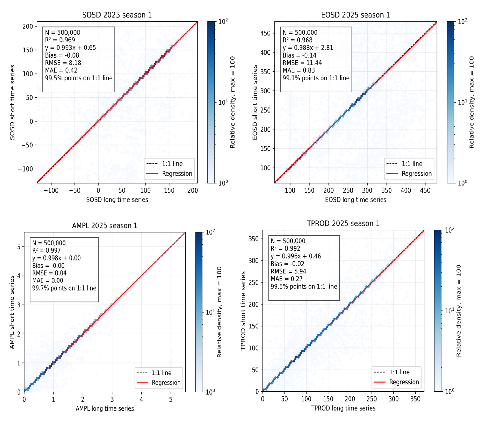
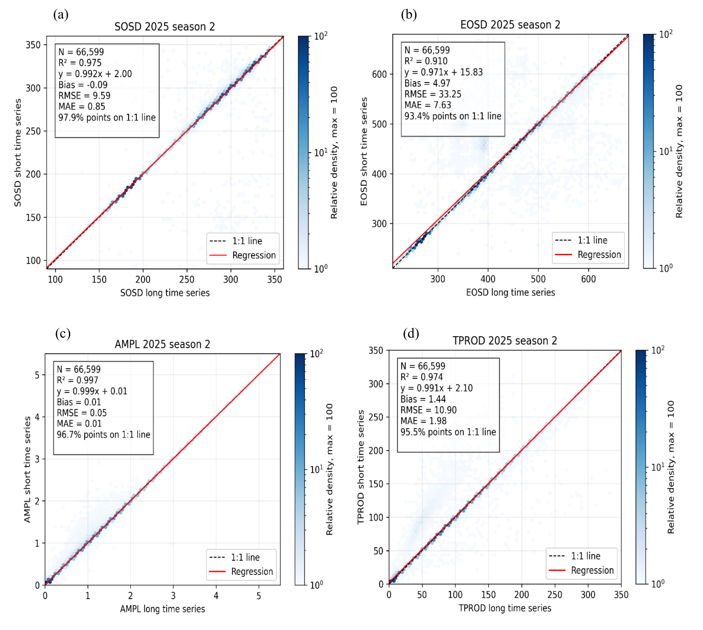
Table 8. Statistical comparison of 13 vegetation phenology and productivity (VPP) metrics derived from long time series inputs and short time series inputs for the 2025 growing seasons over Europe.
| VPP Metric | Season | R2 | Bias | RMSE | MAE | % points on 1:1 line | 1:1 line threshold | Valid pairs N |
| SOSD (days) | 1 | 0.99 | -0.01 | 3.35 | 0.16 | 99.54 | 3.25 | 4.4×107 |
| EOSD (days) | 1 | 0.98 | -0.17 | 7.90 | 0.52 | 99.14 | 4.41 | 4.4×107 |
| MAXD (days) | 1 | 0.99 | -0.03 | 3.56 | 0.15 | 99.66 | 2.64 | 4.4×107 |
| SOSV (×10-3 m²·m⁻²) | 1 | 1.00 | 0.17 | 6.17 | 0.47 | 99.21 | 14.10 | 4.4×107 |
| EOSV (×10-3 m²·m⁻²) | 1 | 1.00 | 0.19 | 5.66 | 0.50 | 98.85 | 9.02 | 4.4×107 |
| MINV (×10-3 m²·m⁻²) | 1 | 0.99 | 0.20 | 4.55 | 0.40 | 98.28 | 3.82 | 4.4×107 |
| MAXV (×10-3 m²·m⁻²) | 1 | 1.00 | 0.14 | 18.48 | 0.76 | 99.74 | 55.74 | 4.4×107 |
| AMPL (×10-3 m²·m⁻²) | 1 | 1.00 | -0.04 | 19.37 | 1.19 | 99.60 | 55.62 | 4.4×107 |
| LENGTH (days) | 1 | 0.97 | -0.07 | 9.40 | 0.75 | 98.74 | 4.17 | 4.4×107 |
| LSLOPE (×10-3 m²·m⁻²·day⁻¹) |
1 | 1.00 | 0.00 | 1.21 | 0.05 | 99.57 | 1.47 | 4.4×107 |
| RSLOPE (×10-3 m²·m⁻²·day⁻¹) |
1 | 0.99 | 0.01 | 1.30 | 0.06 | 99.51 | 1.48 | 4.4×107 |
| TPROD (m²·m⁻²·day) |
1 | 1.00 | -0.01 | 3.29 | 0.21 | 99.45 | 4.26 | 4.4×107 |
| SPROD (m²·m⁻²·day) |
1 | 1.00 | -0.02 | 3.11 | 0.24 | 99.10 | 4.07 | 4.4×107 |
| SOSD (days) | 2 | 0.99 | 0.02 | 6.08 | 0.53 | 96.91 | 2.80 | 6.6×104 |
| EOSD (days) | 2 | 0.92 | 5.08 | 31.76 | 7.29 | 93.30 | 5.61 | 6.6×104 |
| MAXD (days) | 2 | 0.99 | -0.45 | 7.25 | 1.75 | 87.90 | 2.46 | 6.6×104 |
| SOSV (×10-3 m²·m⁻²) | 2 | 1.00 | 1.80 | 12.93 | 2.33 | 96.43 | 15.67 | 6.6×104 |
| EOSV (×10-3 m²·m⁻²) | 2 | 0.99 | -1.00 | 18.27 | 3.80 | 93.18 | 10.37 | 6.6×104 |
| MINV (×10-3 m²·m⁻²) | 2 | 0.98 | -1.29 | 10.19 | 1.62 | 95.79 | 6.25 | 6.6×104 |
| MAXV (×10-3 m²·m⁻²) | 2 | 1.00 | 7.66 | 50.09 | 8.70 | 96.72 | 62.07 | 6.6×104 |
| AMPL (×10-3 m²·m⁻²) | 2 | 1.00 | 9.01 | 51.49 | 10.30 | 95.78 | 61.75 | 6.6×104 |
| LENGTH (days) | 2 | 0.82 | 5.04 | 31.89 | 7.55 | 91.19 | 4.16 | 6.6×104 |
| LSLOPE (×10-3 m²·m⁻²·day⁻¹) |
2 | 1.00 | 0.09 | 1.40 | 0.17 | 97.61 | 1.90 | 6.6×104 |
| RSLOPE (×10-3 m²·m⁻²·day⁻¹) |
2 | 0.97 | -0.13 | 3.39 | 0.59 | 94.72 | 1.53 | 6.6×104 |
| TPROD (m²·m⁻²·day) |
2 | 0.97 | 1.46 | 10.65 | 1.95 | 95.50 | 4.02 | 6.6×104 |
| SPROD (m²·m⁻²·day) |
2 | 0.97 | 1.45 | 9.44 | 1.79 | 94.72 | 3.30 | 6.6×104 |
Note: Reported statistics include coefficient of determination (R²), bias (VPP_short - VPP_long), root mean square error (RMSE), mean absolute error (MAE), percentage of pixels located within a predefined consistency threshold (hexagon size in Figure 11 scatter plots) around the 1:1 line, the corresponding threshold value, and the number of valid paired pixels. Statistics were computed using robust paired-pixel analysis after exclusion of extreme outliers using percentile-based filtering. Season 2 results are based on substantially fewer valid pixels due to the limited spatial extent and weaker signal of secondary growing seasons in Europe.
Table 9. Summary of quality assessment (QA) comparison between vegetation phenology and productivity (VPP) products generated using long time series (TS) and short time series inputs for the 2025 growing seasons over Europe. Statistics are calculated for vegetated land-cover classes only (IGBP classes 1–14).
| Season | Valid vegetated paired pixels (LC 1–14) | Good QA (%) long time series | Good QA (%) short time series | QA improvement (%) | QA degradation (%) |
|---|---|---|---|---|---|
| Season 1 | 4.4×10⁷ | 96.47 | 96.32 | 0.29 | 0.14 |
| Season 2 | 6.6×10⁴ | 91.34 | 90.96 | 0.03 | 0.10 |